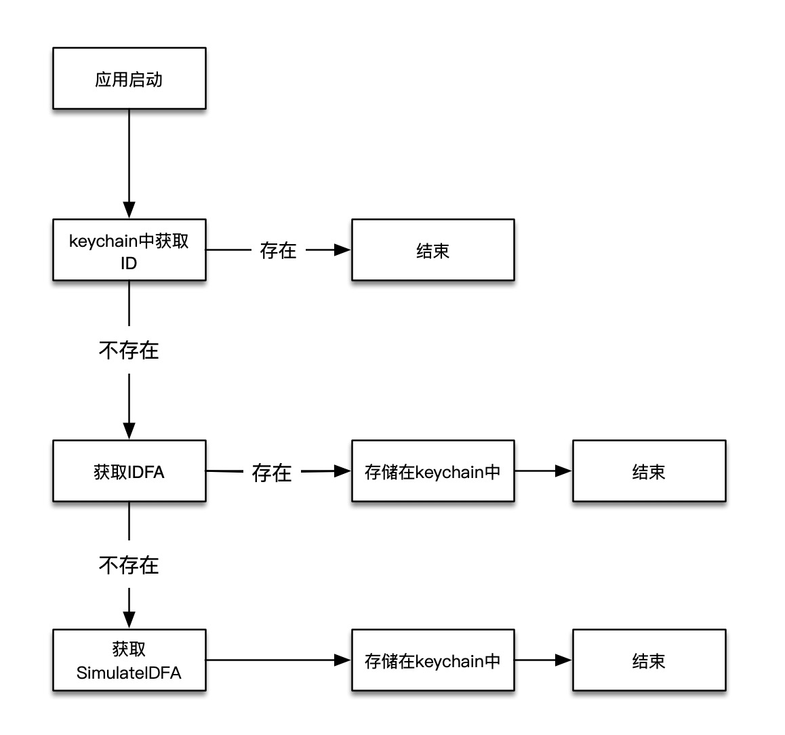

iOS 10以后Apple对IDFA的获取逻辑进行了更新
- iOS10以前，君子协议，不管用户是否同意使用IDFA，都可以获取到IDFA
- iOS10以后，一旦开启了
设置->隐私->广告->限制广告跟踪之后 获取到的idfa将会是00000000-0000-0000-0000-000000000000
隐私一直是Apple的重中之重，从UDID，到MAC地址，再到IDFA，Apple在一步一步保护用户的隐私，但是也给开发者带来了不小的麻烦。在实际研发中，很多功能都要依赖于用户画像，而用户画像要依赖于设备唯一标识。
在用户限制广告跟踪之后，依旧要寻找IDFA的替代品
模拟设备唯一标识
在现行的环境中，要模拟设备唯一标识，需要考虑以下几个方面
- 较长的时效性
- 较长的存储性
- 较低的冲突率
- 较低的漂移率
一、较长的时效性
SimulateIDFA是一个开源的根据设备信息生成UUID的库
生成原理
生成的MD5值分两部分。
以 626363D0-90D4-06BF-C281-384E4E69D3E2 为例：
前16位626363D0-90D4-06BF是由比较稳定的参数组合获得,这前16位只有在系统升级的情况下才会变。
后16位C281-384E4E69D3E2 由 一些比较容易被改变的参数组合生成，比较常见的值变化情况是系统重新启动。
参与前16位计算的参数有：
系统版本（9.3.2）、硬件信息（N53AP,iPhone6,2,中国移动46002,1048576000）、coreServices文件创建更新时间(2015-08-07 23:53:00 +0000,2016-06-07 23:53:09 +0000),系统容量(12266725376)
这里有一些信息是升级的时候会变的，系统版本、coreServices文件创建更新时间、系统容量
参与后16位计算的参数有：
系统开机时间(1473301191去掉后面的4位数 147330)、国家代码(CN)、本地语言(zh-Hans-CN)、设备名称(XXXX) 这里的参数都是比较容易变化的，系统重启离上次重启有10000秒的话会变，其他参数在设置里面可以修改
二、较长的存储性
KeyChain存储在iOS系统中,并且恢复iPhone会使keychain的内容也恢复。但是删除App是不会影响keychain.
不同App之间Keychain是不能相互访问的，但是可以通过配置keychain-sharing来解决。
三、较低的冲突率
生成的ID重复的概率对比 假设一个情况。一天内某个国家有10000000（1千万）台相同型号的设备升级到同一个系统。
一天内这个算法可能的值计算， 24x3600（文件创建时间，单位秒）x 10（文件最后修改时间假设误差在10秒）x 10000000（系统容>量误差范围）x 9000000(设备名称范围，这里假设的是每10台就有2个重复,名称范围就是 10000000x0.9)= 77760000000000000000。
设备a的值为 K，那么设备b的值同为K的可能性为： 1/77760000000000000000. 总共有 10000000台设备。因此，这10000000设备中有与a设备的值同为K的可能性为 1/77760000000000000000 x 10000000 = 1/7776000000000。
iOS10.2 发布后 System/Library/CoreServices 文件夹的创建时间不能获取了。 这样最后算出来的与a可能有值相同的概率是 1/7776000000000 x 24 x 3600 = 1/90000000; ）
四、较低的漂移率
较低的漂移率意味着在同一设备中不同App能获取到相同的值
最后的解决方案
SimulateIDFA + IDFA + KeyChain
SimulateIDFA能提供较长的时效性和较低的冲突率KeyChain能提供较长的存储性SimulateIDFA + KeyChain能有效的降低漂移率- 在第一次能获取到
IDFA的情况下，IDFA + KeyChain可以有效防止用户限制广告跟踪之后IDFA的变化
流程如下

核心代码如下
+ (NSString *)uuidForDevice {
NSString *deviceUUID = [XYKeyChain getDataWithServiceDomain:STR_XYUUIDForKeyChainAndDeviceOrIdfa];
if (deviceUUID && ![deviceUUID isEqualToString:@""] && ![deviceUUID isEqualToString:XY_ZeroIdfa]) {
return deviceUUID;
}
NSString *idfa = [self uuidForIDFA];
if (idfa && ![idfa isEqualToString:@""] && ![idfa isEqualToString:XY_ZeroIdfa]) {
[XYKeyChain setData:idfa serviceDomain:STR_XYUUIDForKeyChainAndDeviceOrIdfa];
return idfa;
}
NSString *deviceInfoUUID = [self uuidForDeviceInfo];
if (deviceInfoUUID && ![deviceInfoUUID isEqualToString:@""]) {
[XYKeyChain setData:deviceInfoUUID serviceDomain:STR_XYUUIDForKeyChainAndDeviceOrIdfa];
return deviceInfoUUID;
}
NSString *uuid = [self uuid];
if (uuid && ![uuid isEqualToString:@""]) {
[XYKeyChain setData:uuid serviceDomain:STR_XYUUIDForKeyChainAndDeviceOrIdfa];
return uuid;
}
return @"";
}
根据以上组合封装之后即为YXUUID
XYUUID介绍
XYUUID的优点
- API简单
- 使用了最新的iOS 14 API来获取IDFA
- 具有不同持久性级别的通用唯一标识符
uuidForDevice的有点
- 较长的时效性
- 较长的存储性
- 较低的冲突率
- 较低的漂移率
API
获取不同持久化级别的UUID
/// 随机UUID，此值每次都会刷新
+ (NSString *)uuid;
/// 安装UUID，每次重新安装，此值会刷新
+ (NSString *)uuidForInstall;
/// 开启应用UUID，每次开启应用，此值会刷新
+ (NSString *)uuidForAppOpen;
/// IDFA，开启关闭授权，此值会刷新
+ (NSString *)uuidForIDFA;
/// IDFV
+ (NSString *)uuidForIDFV;
/// 设备信息UUID，根据设备信息生成，能维持一段时间内不变
+ (NSString *)uuidForDeviceInfo;
/// 钥匙串UUID，卸载应用保持不变
+ (NSString *)uuidForKeychain;
/// 设备UUID，设备唯一标识符
+ (NSString *)uuidForDevice;
持久化级别
| UUID | App relaunch | Reset Advertising Identifier | App reinstall | System reboot | System upgrade | System reset |
|---|---|---|---|---|---|---|
uuid |
❌ | ❌ | ❌ | ❌ | ❌ | ❌ |
uuidForInstall |
✅ | ✅ | ❌ | ✅ | ✅ | ❌ |
uuidForAppOpen |
❌ | ✅ | ❌ | ❌ | ❌ | ❌ |
uuidForIDFA |
✅ | ❌ | ✅ | ✅ | ✅ | ❌ |
uuidForIDFV |
✅ | ✅ | ❌ | ✅ | ✅ | ❌ |
uuidForDeviceInfo |
✅ | ✅ | ✅ | ❌ | ❌ | ❌ |
uuidForKeychain |
✅ | ✅ | ✅ | ✅ | ✅ | ❌ |
uuidForDevice |
✅ | ✅ | ✅ | ✅ | ✅ | ❌ |